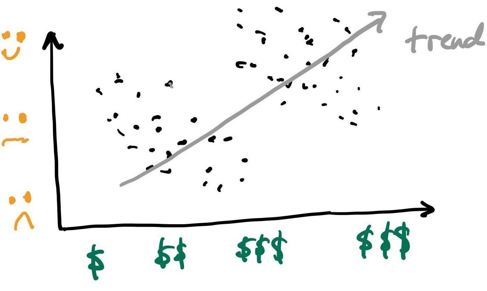
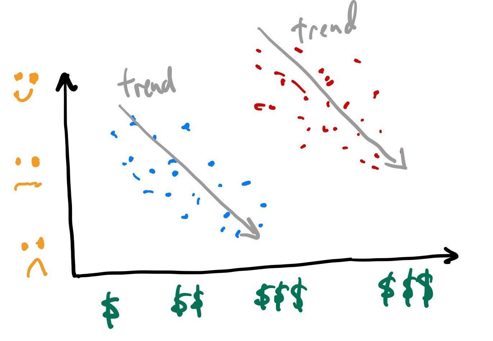
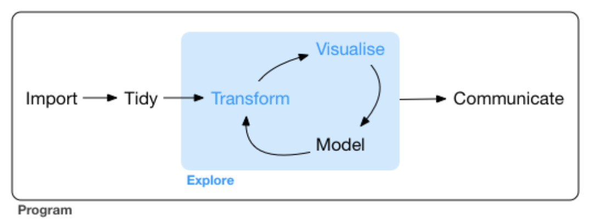
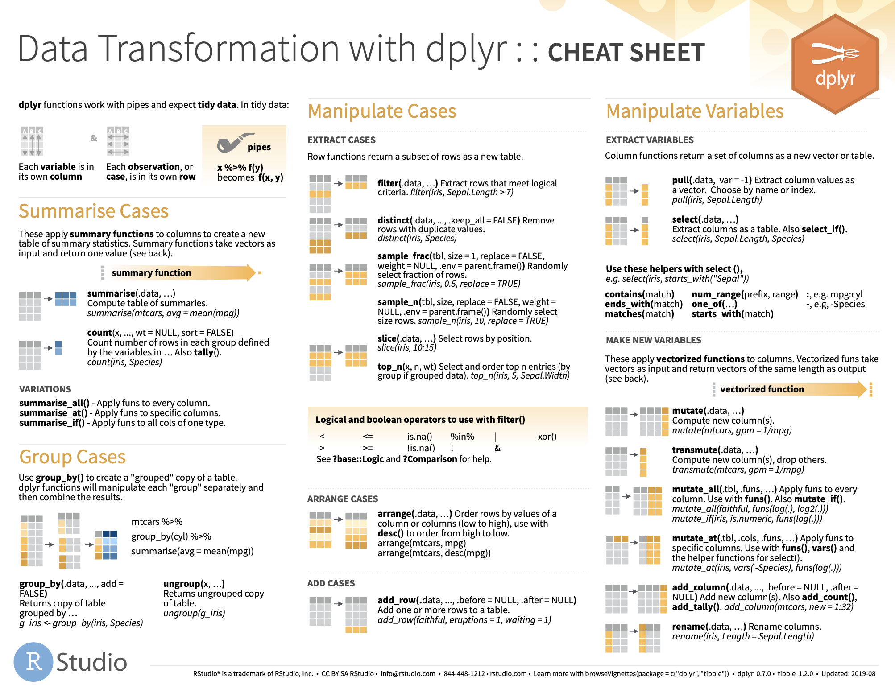
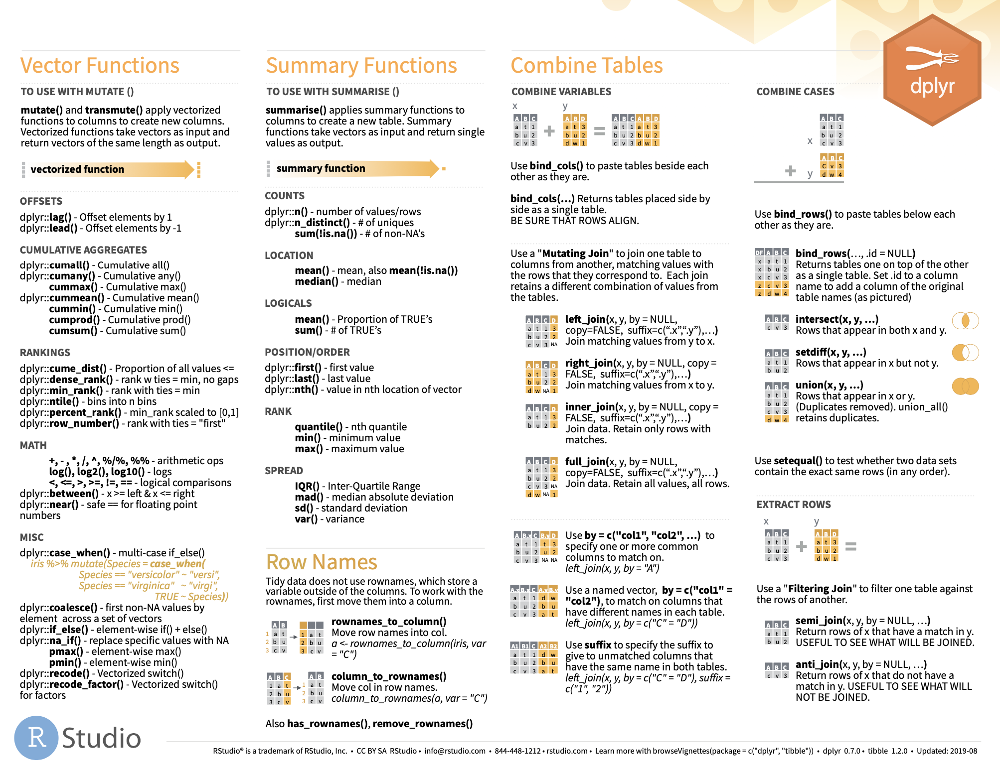
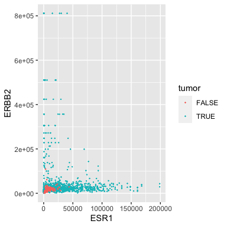
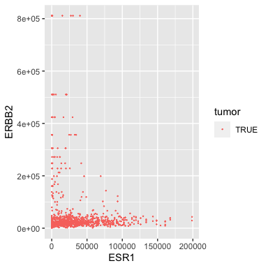
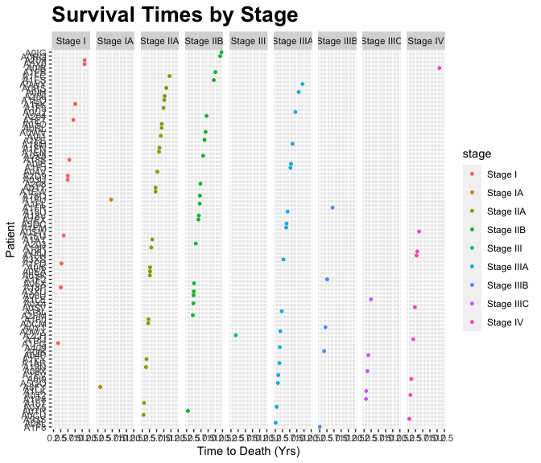
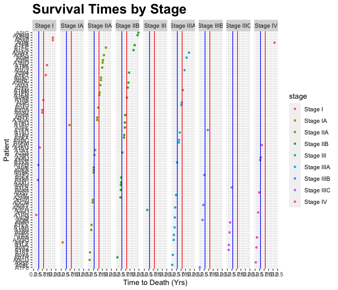

Transformations of breast cancer transcriptional cohorts
M Hallett
21/07/2020
Simpson’s Paradox
- Simpson’s paradox: The phenomenon where a trend appears in several different groups of data but disappears or reverses when these groups are combined.
 
- Suppose here we asked a group of people how much they paid for their car and how satified they are with it.
- When we are not aware that the points (samples, people, objects) belong to two distinct groups (eg poor vs rich, tumor vs normal, patients vs healthy etc) the data suggests an upward trend.
- However if we were told that the blue points are low income people and red are high income, our interpretation might change.
- How would interpret these plots?
- Your challenge is to figure out how this relates to today’s lecture.
Outline for today
- Today we investigate the Transform in the the Transform \(\rightarrow\) Visualize \(\rightarrow\) Model cycle.

We will return to our \({\tt tcga\_brca}\) breast cancer transcriptomics dataset.
Transformations select specific subsets of the data for visualization and modelling.
What are we fighting for?
- First let’s ask why do we want to do data science on BC transcriptomes, or any other dataset for that matter? What are our goals? What motivates the study?
Ok, it’s certainly not warfare but the analysis of datasets can quickly result in a quagmire that takes months or years to complete.
It’s important to go into the analysis with a set of questions that are as clear and well-defined as posible. Not perhaps as precise as clinical trials, but awareness of the design, power and goals of the experiment really help avoid long protracted struggles with the data and false findings.
Common goals in cancer informatics
Basic science, for sure.
Better underestanding of the molecular basis of BC. Eg which genes, pathways and processes are at play in each subtype of the disease. This might lead to new therapies or therapeutic avenues.
Discover ways to intervene clinically. What is the clinical end-point of the study?
Clinical endpoints are distinct measurements or analyses of disease characteristics observed in a research study or a clinical trial that reflect the effect of a therapeutic intervention.
Examples of research projects for different clinical endpoints
Disease Marker Find a gene(s) that indicates a woman (in the population) is at risk of developing breast cancer.
Screening Build image analysis technology to identify with high accuracy very small tumors in the mammary gland.
Diagnosis Find a gene(s) or gene products that accurately confirm that a woman does or does not have breast cancer (eg analogous to a pregnancy test).
Classification Given that a woman has been diagnosed with BC, find a gene(s) or gene products that classify her tumor into the correct subtype.
Prognosis Given that a woman has been diagnosed with a specific type of BC, predict how long she will live disease-free post-initial treatment/surgery.
Benefit from Therapy Given the characteristics of a woman’s tumor, predict whether she will or will not benefit from a specific therapy.
Monitoring Find a gene(s) or gene products that faithfully report if a new tumor (micrometastasis) has appeared in a woman post-treatment.
Clinical Validity and Utility
Whatever the endpoint is, ideally the endpoint has these two properties.
Clinical utility means that the result of your research can be used by clinicians to change their decision making in precise ways.
Clinicial validity means that the result of your research generalizes to the intended population, and remains able to function with sufficient efficacy.
Bottomline here
Bio-data is inherently very noisey.
Technical noise due to inaccurate measurements and bias in the measurements.
Biological noise due to natural variability between patients (eg small genetic differences), cells (eg cell cycle fluctuations) and diferences due to lifestyle etc.
When starting out your analysis, it is wise to search for a core homogenous subgroup. It might be easier to solve the problem (eg find the gene or gene products for your endpoint) in this core group first, and then expand your analysis out to the larger cohort.
I will give some examples of transformations now.
Initialize our session
We are going to focus on a package called \({\tt dplyr}\) today. It’s also part of the \({\tt tidyverse}\).
If \({\tt ggplot2}\) is the grammar of plots, \({\tt dplyr}\) is the grammer of data transformation.
Note the class of the different attributes
- There are three classes here: \({\tt character (chr)}\), \({\tt lgl (logical)}\) and \({\tt dbl (double)}\). Note that \({\tt double}\) is the same as \({\tt numeric}\). Historical anomaly.
small_brca
## # A tibble: 1,215 x 79
## id tss participant barcode bcr_patient_uuid form_completion…
## <chr> <chr> <chr> <chr> <chr> <chr>
## 1 TCGA… E9 A1NF TCGA-E… a8b1f6e7-2bcf-4… 2011-6-23
## 2 TCGA… D8 A27M TCGA-D… ae65baeb-6b78-4… 2011-7-17
## 3 TCGA… BH A0GZ TCGA-B… 27dfb9d4-3a2c-4… 2010-11-10
## 4 TCGA… BH A18V TCGA-B… 6b960b58-28e1-4… 2011-7-2
## 5 TCGA… A7 A13G TCGA-A… 6cd9baf5-bbe0-4… 2011-5-16
## 6 TCGA… C8 A275 TCGA-C… ce887e90-0660-4… 2011-7-21
## 7 TCGA… AN A0XS TCGA-A… 95e949d3-b1f3-4… 2011-3-28
## 8 TCGA… OL A5RW TCGA-O… A82D0A57-4383-4… 2013-5-16
## 9 TCGA… OL A5RX TCGA-O… 43C0BEC6-6FAC-4… 2013-5-16
## 10 TCGA… E9 A1RD TCGA-E… 5fe3c51f-65e2-4… 2011-7-28
## # … with 1,205 more rows, and 73 more variables: birth_days_to <chr>,
## # gender <chr>, menopause_status <chr>, race <chr>, ethnicity <chr>,
## # tumor_status <chr>, vital_status <chr>, death_days_to <chr>,
## # histologic_diagnosis_other <chr>, initial_pathologic_dx_year <chr>,
## # age_at_diagnosis <chr>, micromet_detection_by_ihc <chr>,
## # lymph_nodes_examined_count <chr>, ajcc_pathologic_tumor_stage <chr>,
## # er_status_by_ihc <chr>, er_status_ihc_Percent_Positive <chr>,
## # pr_status_by_ihc <chr>, pr_status_ihc_percent_positive <chr>,
## # her2_fish_status <chr>, her2_copy_number <chr>, histological_type <chr>,
## # metastatic_tumor_indicator <chr>, tumor <lgl>, ANLN <dbl>, FOXC1 <dbl>,
## # CDH3 <dbl>, FGFR4 <dbl>, UBE2T <dbl>, NDC80 <dbl>, PGR <dbl>, BIRC5 <dbl>,
## # ORC6 <dbl>, ESR1 <dbl>, PHGDH <dbl>, PTTG1 <dbl>, MELK <dbl>, NAT1 <dbl>,
## # CXXC5 <dbl>, BCL2 <dbl>, RRM2 <dbl>, GPR160 <dbl>, EXO1 <dbl>, UBE2C <dbl>,
## # TYMS <dbl>, KRT5 <dbl>, KRT14 <dbl>, MAPT <dbl>, CDC6 <dbl>, MMP11 <dbl>,
## # MYBL2 <dbl>, SFRP1 <dbl>, CCNE1 <dbl>, BLVRA <dbl>, BAG1 <dbl>, MLPH <dbl>,
## # CDC20 <dbl>, CENPF <dbl>, MIA <dbl>, KRT17 <dbl>, FOXA1 <dbl>,
## # ACTR3B <dbl>, CCNB1 <dbl>, MDM2 <dbl>, MYC <dbl>, CEP55 <dbl>,
## # SLC39A6 <dbl>, ERBB2 <dbl>, GRB7 <dbl>, KIF2C <dbl>, NUF2 <dbl>,
## # EGFR <dbl>, MKI67 <dbl>, TMEM45B <dbl>- There are other classes not used here. We will see \({\tt fctr (factors)}\) later.
\({\tt dplyr}\) cheat sheet (part 1)
- variables are columns; observations are rows.

\({\tt dplyr}\) cheat sheet (part 2)
- Available here
- Mounted R cheat sheets make great gifts for Bioinformaticians!

Filtering observations
Remember: variables are columns; observations are rows. Sometimes you want to analyze just a subset of all your observations (rows; samples). Before visualization, you need to remove unwanted rows. And that’s why the \({\tt filter()}\) functions exist.
For example, let’s remove the morphologically normal samples from the analysis.

Filtering out normal samples
(tumor_brca <- filter(small_brca, tumor==TRUE))
## # A tibble: 1,102 x 79
## id tss participant barcode bcr_patient_uuid form_completion…
## <chr> <chr> <chr> <chr> <chr> <chr>
## 1 TCGA… E9 A1NF TCGA-E… a8b1f6e7-2bcf-4… 2011-6-23
## 2 TCGA… D8 A27M TCGA-D… ae65baeb-6b78-4… 2011-7-17
## 3 TCGA… BH A0GZ TCGA-B… 27dfb9d4-3a2c-4… 2010-11-10
## 4 TCGA… BH A18V TCGA-B… 6b960b58-28e1-4… 2011-7-2
## 5 TCGA… A7 A13G TCGA-A… 6cd9baf5-bbe0-4… 2011-5-16
## 6 TCGA… C8 A275 TCGA-C… ce887e90-0660-4… 2011-7-21
## 7 TCGA… AN A0XS TCGA-A… 95e949d3-b1f3-4… 2011-3-28
## 8 TCGA… OL A5RW TCGA-O… A82D0A57-4383-4… 2013-5-16
## 9 TCGA… OL A5RX TCGA-O… 43C0BEC6-6FAC-4… 2013-5-16
## 10 TCGA… E9 A1RD TCGA-E… 5fe3c51f-65e2-4… 2011-7-28
## # … with 1,092 more rows, and 73 more variables: birth_days_to <chr>,
## # gender <chr>, menopause_status <chr>, race <chr>, ethnicity <chr>,
## # tumor_status <chr>, vital_status <chr>, death_days_to <chr>,
## # histologic_diagnosis_other <chr>, initial_pathologic_dx_year <chr>,
## # age_at_diagnosis <chr>, micromet_detection_by_ihc <chr>,
## # lymph_nodes_examined_count <chr>, ajcc_pathologic_tumor_stage <chr>,
## # er_status_by_ihc <chr>, er_status_ihc_Percent_Positive <chr>,
## # pr_status_by_ihc <chr>, pr_status_ihc_percent_positive <chr>,
## # her2_fish_status <chr>, her2_copy_number <chr>, histological_type <chr>,
## # metastatic_tumor_indicator <chr>, tumor <lgl>, ANLN <dbl>, FOXC1 <dbl>,
## # CDH3 <dbl>, FGFR4 <dbl>, UBE2T <dbl>, NDC80 <dbl>, PGR <dbl>, BIRC5 <dbl>,
## # ORC6 <dbl>, ESR1 <dbl>, PHGDH <dbl>, PTTG1 <dbl>, MELK <dbl>, NAT1 <dbl>,
## # CXXC5 <dbl>, BCL2 <dbl>, RRM2 <dbl>, GPR160 <dbl>, EXO1 <dbl>, UBE2C <dbl>,
## # TYMS <dbl>, KRT5 <dbl>, KRT14 <dbl>, MAPT <dbl>, CDC6 <dbl>, MMP11 <dbl>,
## # MYBL2 <dbl>, SFRP1 <dbl>, CCNE1 <dbl>, BLVRA <dbl>, BAG1 <dbl>, MLPH <dbl>,
## # CDC20 <dbl>, CENPF <dbl>, MIA <dbl>, KRT17 <dbl>, FOXA1 <dbl>,
## # ACTR3B <dbl>, CCNB1 <dbl>, MDM2 <dbl>, MYC <dbl>, CEP55 <dbl>,
## # SLC39A6 <dbl>, ERBB2 <dbl>, GRB7 <dbl>, KIF2C <dbl>, NUF2 <dbl>,
## # EGFR <dbl>, MKI67 <dbl>, TMEM45B <dbl>Let’s make sure that worked

Filtering out samples with unknown or ill-defined TNM stage
- Recall from Lecture 02 our disucssion of TNM staging.
unique(tumor_brca$ajcc_pathologic_tumor_stage)
## [1] "Stage IIA" "Stage IA" "Stage IIB" "Stage IIIA"
## [5] "Stage IB" "Stage I" "Stage IIIC" "Stage IV"
## [9] "[Discrepancy]" "Stage II" "Stage IIIB" "[Not Available]"
## [13] "Stage X" NA "Stage III"\({\tt unique()}\) returns the distinct (or unique) objects observed in a (long) vector of objects. Try removing the \({\tt unique()}\) call from above and see what happens.
There are four (of 15) types of objects that I would like to remove from the analysis to begin with: 9, 12, 13, 14.
Note the NA for #14. Not that same as the character “[Not Available]” #12 (but both must go!).
Filtering by TNM stage
(tnm_tumor_brca <- filter(tumor_brca, !( (is.na(ajcc_pathologic_tumor_stage) |
(ajcc_pathologic_tumor_stage == "[Discrepancy]") |
(ajcc_pathologic_tumor_stage == "[Not Available]") |
(ajcc_pathologic_tumor_stage == "Stage X") ) ) ) )
## # A tibble: 1,078 x 79
## id tss participant barcode bcr_patient_uuid form_completion…
## <chr> <chr> <chr> <chr> <chr> <chr>
## 1 TCGA… E9 A1NF TCGA-E… a8b1f6e7-2bcf-4… 2011-6-23
## 2 TCGA… D8 A27M TCGA-D… ae65baeb-6b78-4… 2011-7-17
## 3 TCGA… BH A0GZ TCGA-B… 27dfb9d4-3a2c-4… 2010-11-10
## 4 TCGA… BH A18V TCGA-B… 6b960b58-28e1-4… 2011-7-2
## 5 TCGA… A7 A13G TCGA-A… 6cd9baf5-bbe0-4… 2011-5-16
## 6 TCGA… C8 A275 TCGA-C… ce887e90-0660-4… 2011-7-21
## 7 TCGA… AN A0XS TCGA-A… 95e949d3-b1f3-4… 2011-3-28
## 8 TCGA… OL A5RW TCGA-O… A82D0A57-4383-4… 2013-5-16
## 9 TCGA… OL A5RX TCGA-O… 43C0BEC6-6FAC-4… 2013-5-16
## 10 TCGA… E9 A1RD TCGA-E… 5fe3c51f-65e2-4… 2011-7-28
## # … with 1,068 more rows, and 73 more variables: birth_days_to <chr>,
## # gender <chr>, menopause_status <chr>, race <chr>, ethnicity <chr>,
## # tumor_status <chr>, vital_status <chr>, death_days_to <chr>,
## # histologic_diagnosis_other <chr>, initial_pathologic_dx_year <chr>,
## # age_at_diagnosis <chr>, micromet_detection_by_ihc <chr>,
## # lymph_nodes_examined_count <chr>, ajcc_pathologic_tumor_stage <chr>,
## # er_status_by_ihc <chr>, er_status_ihc_Percent_Positive <chr>,
## # pr_status_by_ihc <chr>, pr_status_ihc_percent_positive <chr>,
## # her2_fish_status <chr>, her2_copy_number <chr>, histological_type <chr>,
## # metastatic_tumor_indicator <chr>, tumor <lgl>, ANLN <dbl>, FOXC1 <dbl>,
## # CDH3 <dbl>, FGFR4 <dbl>, UBE2T <dbl>, NDC80 <dbl>, PGR <dbl>, BIRC5 <dbl>,
## # ORC6 <dbl>, ESR1 <dbl>, PHGDH <dbl>, PTTG1 <dbl>, MELK <dbl>, NAT1 <dbl>,
## # CXXC5 <dbl>, BCL2 <dbl>, RRM2 <dbl>, GPR160 <dbl>, EXO1 <dbl>, UBE2C <dbl>,
## # TYMS <dbl>, KRT5 <dbl>, KRT14 <dbl>, MAPT <dbl>, CDC6 <dbl>, MMP11 <dbl>,
## # MYBL2 <dbl>, SFRP1 <dbl>, CCNE1 <dbl>, BLVRA <dbl>, BAG1 <dbl>, MLPH <dbl>,
## # CDC20 <dbl>, CENPF <dbl>, MIA <dbl>, KRT17 <dbl>, FOXA1 <dbl>,
## # ACTR3B <dbl>, CCNB1 <dbl>, MDM2 <dbl>, MYC <dbl>, CEP55 <dbl>,
## # SLC39A6 <dbl>, ERBB2 <dbl>, GRB7 <dbl>, KIF2C <dbl>, NUF2 <dbl>,
## # EGFR <dbl>, MKI67 <dbl>, TMEM45B <dbl>- Note the logical expression using the \({\tt !~(not)}\) operator and the \({\tt |~(or)}\) operator.
- This also works (try to understand why \({\tt ? ~ grepl()}\) ):
filter(tumor_brca, grepl(“Stage”, ajcc_pathologic_tumor_stage))
Arranging the observations
Sometimes we don’t want to filter out observations but simply arrange them in a more informative manner.
Our goal here is to sort first by TNM stage, and then according to how many days they survived since diagnosis.
sorted_tnm_tumor_brca <- arrange(tnm_tumor_brca, ajcc_pathologic_tumor_stage, death_days_to)
head(sorted_tnm_tumor_brca)
## # A tibble: 6 x 79
## id tss participant barcode bcr_patient_uuid form_completion…
## <chr> <chr> <chr> <chr> <chr> <chr>
## 1 TCGA… A1 A0SB TCGA-A… 0045349c-69d9-4… 2011-6-30
## 2 TCGA… A8 A08A TCGA-A… 7fe4670d-4626-4… 2011-5-27
## 3 TCGA… E2 A156 TCGA-E… f05d314c-5ec5-4… 2011-4-7
## 4 TCGA… A8 A095 TCGA-A… 29df128d-ace2-4… 2011-5-27
## 5 TCGA… AR A255 TCGA-A… e8f3cc64-5e15-4… 2011-8-31
## 6 TCGA… AR A24S TCGA-A… 074e8b06-3929-4… 2011-8-30
## # … with 73 more variables: birth_days_to <chr>, gender <chr>,
## # menopause_status <chr>, race <chr>, ethnicity <chr>, tumor_status <chr>,
## # vital_status <chr>, death_days_to <chr>, histologic_diagnosis_other <chr>,
## # initial_pathologic_dx_year <chr>, age_at_diagnosis <chr>,
## # micromet_detection_by_ihc <chr>, lymph_nodes_examined_count <chr>,
## # ajcc_pathologic_tumor_stage <chr>, er_status_by_ihc <chr>,
## # er_status_ihc_Percent_Positive <chr>, pr_status_by_ihc <chr>,
## # pr_status_ihc_percent_positive <chr>, her2_fish_status <chr>,
## # her2_copy_number <chr>, histological_type <chr>,
## # metastatic_tumor_indicator <chr>, tumor <lgl>, ANLN <dbl>, FOXC1 <dbl>,
## # CDH3 <dbl>, FGFR4 <dbl>, UBE2T <dbl>, NDC80 <dbl>, PGR <dbl>, BIRC5 <dbl>,
## # ORC6 <dbl>, ESR1 <dbl>, PHGDH <dbl>, PTTG1 <dbl>, MELK <dbl>, NAT1 <dbl>,
## # CXXC5 <dbl>, BCL2 <dbl>, RRM2 <dbl>, GPR160 <dbl>, EXO1 <dbl>, UBE2C <dbl>,
## # TYMS <dbl>, KRT5 <dbl>, KRT14 <dbl>, MAPT <dbl>, CDC6 <dbl>, MMP11 <dbl>,
## # MYBL2 <dbl>, SFRP1 <dbl>, CCNE1 <dbl>, BLVRA <dbl>, BAG1 <dbl>, MLPH <dbl>,
## # CDC20 <dbl>, CENPF <dbl>, MIA <dbl>, KRT17 <dbl>, FOXA1 <dbl>,
## # ACTR3B <dbl>, CCNB1 <dbl>, MDM2 <dbl>, MYC <dbl>, CEP55 <dbl>,
## # SLC39A6 <dbl>, ERBB2 <dbl>, GRB7 <dbl>, KIF2C <dbl>, NUF2 <dbl>,
## # EGFR <dbl>, MKI67 <dbl>, TMEM45B <dbl>Arranging the observations by TNM and survival time
tail(sorted_tnm_tumor_brca)
## # A tibble: 6 x 79
## id tss participant barcode bcr_patient_uuid form_completion…
## <chr> <chr> <chr> <chr> <chr> <chr>
## 1 TCGA… A2 A0SW TCGA-A… 991e1427-3c01-4… 2010-11-8
## 2 TCGA… A2 A0T2 TCGA-A… 128d198e-9b22-4… 2010-11-12
## 3 TCGA… B6 A0I9 TCGA-B… 44954053-0b93-4… 2010-11-2
## 4 TCGA… B6 A0IB TCGA-B… 157ec9e0-ca6e-4… 2010-11-2
## 5 TCGA… BH A18J TCGA-B… cc074b7f-d3b2-4… 2011-6-8
## 6 TCGA… A2 A0SV TCGA-A… ad01259b-d858-4… 2010-11-15
## # … with 73 more variables: birth_days_to <chr>, gender <chr>,
## # menopause_status <chr>, race <chr>, ethnicity <chr>, tumor_status <chr>,
## # vital_status <chr>, death_days_to <chr>, histologic_diagnosis_other <chr>,
## # initial_pathologic_dx_year <chr>, age_at_diagnosis <chr>,
## # micromet_detection_by_ihc <chr>, lymph_nodes_examined_count <chr>,
## # ajcc_pathologic_tumor_stage <chr>, er_status_by_ihc <chr>,
## # er_status_ihc_Percent_Positive <chr>, pr_status_by_ihc <chr>,
## # pr_status_ihc_percent_positive <chr>, her2_fish_status <chr>,
## # her2_copy_number <chr>, histological_type <chr>,
## # metastatic_tumor_indicator <chr>, tumor <lgl>, ANLN <dbl>, FOXC1 <dbl>,
## # CDH3 <dbl>, FGFR4 <dbl>, UBE2T <dbl>, NDC80 <dbl>, PGR <dbl>, BIRC5 <dbl>,
## # ORC6 <dbl>, ESR1 <dbl>, PHGDH <dbl>, PTTG1 <dbl>, MELK <dbl>, NAT1 <dbl>,
## # CXXC5 <dbl>, BCL2 <dbl>, RRM2 <dbl>, GPR160 <dbl>, EXO1 <dbl>, UBE2C <dbl>,
## # TYMS <dbl>, KRT5 <dbl>, KRT14 <dbl>, MAPT <dbl>, CDC6 <dbl>, MMP11 <dbl>,
## # MYBL2 <dbl>, SFRP1 <dbl>, CCNE1 <dbl>, BLVRA <dbl>, BAG1 <dbl>, MLPH <dbl>,
## # CDC20 <dbl>, CENPF <dbl>, MIA <dbl>, KRT17 <dbl>, FOXA1 <dbl>,
## # ACTR3B <dbl>, CCNB1 <dbl>, MDM2 <dbl>, MYC <dbl>, CEP55 <dbl>,
## # SLC39A6 <dbl>, ERBB2 <dbl>, GRB7 <dbl>, KIF2C <dbl>, NUF2 <dbl>,
## # EGFR <dbl>, MKI67 <dbl>, TMEM45B <dbl>What happened here?
Hint: What is the type of \({\tt deaths\_days\_to}\)?
How do we fix this?
Converting the type of a variable (column)
Currently, \({\tt death\_days\_to}\) has type \({\tt character}\).
lexicographical ordering: “a” < “ab” < “b”
“1” < “12” < “2”
1 < 2 < 12
tail(sorted_tnm_tumor_brca[, c( "ajcc_pathologic_tumor_stage", "vital_status", "death_days_to")])
## # A tibble: 6 x 3
## ajcc_pathologic_tumor_stage vital_status death_days_to
## <chr> <chr> <chr>
## 1 Stage IV Dead 1365
## 2 Stage IV Dead 255
## 3 Stage IV Dead 362
## 4 Stage IV Dead 3941
## 5 Stage IV Dead 612
## 6 Stage IV Dead 825Converting the type of a variable (column)
tail(sorted_tnm_tumor_brca[, c( "ajcc_pathologic_tumor_stage", "vital_status", "death_days_to")])
## # A tibble: 6 x 3
## ajcc_pathologic_tumor_stage vital_status death_days_to
## <chr> <chr> <dbl>
## 1 Stage IV Dead 1365
## 2 Stage IV Dead 255
## 3 Stage IV Dead 362
## 4 Stage IV Dead 3941
## 5 Stage IV Dead 612
## 6 Stage IV Dead 825Note that the \({\tt chr}\) is now a \({\tt double~(dbl)}\) (a real number).
Note also that we haven’t re-sorted yet… That’s next…
Converting the type of a variable (column)
final_brca <- arrange(sorted_tnm_tumor_brca, ajcc_pathologic_tumor_stage, death_days_to)
final_brca[1058:1068, c( "ajcc_pathologic_tumor_stage", "death_days_to")]
## # A tibble: 11 x 2
## ajcc_pathologic_tumor_stage death_days_to
## <chr> <dbl>
## 1 Stage IIIC NA
## 2 Stage IV 116
## 3 Stage IV 255
## 4 Stage IV 362
## 5 Stage IV 612
## 6 Stage IV 825
## 7 Stage IV 1034
## 8 Stage IV 1127
## 9 Stage IV 1365
## 10 Stage IV 3941
## 11 Stage IV NA???
- But TNM stage (variable \({\tt ajcc\_pathologic\_tumor\_stage}\)) is also a \({\tt character}\); why did it sort correctly?
final_brca$ajcc_pathologic_tumor_stage
## [1] "Stage I" "Stage I" "Stage I" "Stage I" "Stage I"
## [6] "Stage I" "Stage I" "Stage I" "Stage I" "Stage I"
## [11] "Stage I" "Stage I" "Stage I" "Stage I" "Stage I"
## [16] "Stage I" "Stage I" "Stage I" "Stage I" "Stage I"
## [21] "Stage I" "Stage I" "Stage I" "Stage I" "Stage I"
## [26] "Stage I" "Stage I" "Stage I" "Stage I" "Stage I"
## [31] "Stage I" "Stage I" "Stage I" "Stage I" "Stage I"
## [36] "Stage I" "Stage I" "Stage I" "Stage I" "Stage I"
## [41] "Stage I" "Stage I" "Stage I" "Stage I" "Stage I"
## [46] "Stage I" "Stage I" "Stage I" "Stage I" "Stage I"
## [51] "Stage I" "Stage I" "Stage I" "Stage I" "Stage I"
## [56] "Stage I" "Stage I" "Stage I" "Stage I" "Stage I"
## [61] "Stage I" "Stage I" "Stage I" "Stage I" "Stage I"
## [66] "Stage I" "Stage I" "Stage I" "Stage I" "Stage I"
## [71] "Stage I" "Stage I" "Stage I" "Stage I" "Stage I"
## [76] "Stage I" "Stage I" "Stage I" "Stage I" "Stage I"
## [81] "Stage I" "Stage I" "Stage I" "Stage I" "Stage I"
## [86] "Stage I" "Stage I" "Stage I" "Stage I" "Stage IA"
## [91] "Stage IA" "Stage IA" "Stage IA" "Stage IA" "Stage IA"
## [96] "Stage IA" "Stage IA" "Stage IA" "Stage IA" "Stage IA"
## [101] "Stage IA" "Stage IA" "Stage IA" "Stage IA" "Stage IA"
## [106] "Stage IA" "Stage IA" "Stage IA" "Stage IA" "Stage IA"
## [111] "Stage IA" "Stage IA" "Stage IA" "Stage IA" "Stage IA"
## [116] "Stage IA" "Stage IA" "Stage IA" "Stage IA" "Stage IA"
## [121] "Stage IA" "Stage IA" "Stage IA" "Stage IA" "Stage IA"
## [126] "Stage IA" "Stage IA" "Stage IA" "Stage IA" "Stage IA"
## [131] "Stage IA" "Stage IA" "Stage IA" "Stage IA" "Stage IA"
## [136] "Stage IA" "Stage IA" "Stage IA" "Stage IA" "Stage IA"
## [141] "Stage IA" "Stage IA" "Stage IA" "Stage IA" "Stage IA"
## [146] "Stage IA" "Stage IA" "Stage IA" "Stage IA" "Stage IA"
## [151] "Stage IA" "Stage IA" "Stage IA" "Stage IA" "Stage IA"
## [156] "Stage IA" "Stage IA" "Stage IA" "Stage IA" "Stage IA"
## [161] "Stage IA" "Stage IA" "Stage IA" "Stage IA" "Stage IA"
## [166] "Stage IA" "Stage IA" "Stage IA" "Stage IA" "Stage IA"
## [171] "Stage IA" "Stage IA" "Stage IA" "Stage IA" "Stage IA"
## [176] "Stage IA" "Stage IB" "Stage IB" "Stage IB" "Stage IB"
## [181] "Stage IB" "Stage IB" "Stage II" "Stage II" "Stage II"
## [186] "Stage II" "Stage II" "Stage II" "Stage IIA" "Stage IIA"
## [191] "Stage IIA" "Stage IIA" "Stage IIA" "Stage IIA" "Stage IIA"
## [196] "Stage IIA" "Stage IIA" "Stage IIA" "Stage IIA" "Stage IIA"
## [201] "Stage IIA" "Stage IIA" "Stage IIA" "Stage IIA" "Stage IIA"
## [206] "Stage IIA" "Stage IIA" "Stage IIA" "Stage IIA" "Stage IIA"
## [211] "Stage IIA" "Stage IIA" "Stage IIA" "Stage IIA" "Stage IIA"
## [216] "Stage IIA" "Stage IIA" "Stage IIA" "Stage IIA" "Stage IIA"
## [221] "Stage IIA" "Stage IIA" "Stage IIA" "Stage IIA" "Stage IIA"
## [226] "Stage IIA" "Stage IIA" "Stage IIA" "Stage IIA" "Stage IIA"
## [231] "Stage IIA" "Stage IIA" "Stage IIA" "Stage IIA" "Stage IIA"
## [236] "Stage IIA" "Stage IIA" "Stage IIA" "Stage IIA" "Stage IIA"
## [241] "Stage IIA" "Stage IIA" "Stage IIA" "Stage IIA" "Stage IIA"
## [246] "Stage IIA" "Stage IIA" "Stage IIA" "Stage IIA" "Stage IIA"
## [251] "Stage IIA" "Stage IIA" "Stage IIA" "Stage IIA" "Stage IIA"
## [256] "Stage IIA" "Stage IIA" "Stage IIA" "Stage IIA" "Stage IIA"
## [261] "Stage IIA" "Stage IIA" "Stage IIA" "Stage IIA" "Stage IIA"
## [266] "Stage IIA" "Stage IIA" "Stage IIA" "Stage IIA" "Stage IIA"
## [271] "Stage IIA" "Stage IIA" "Stage IIA" "Stage IIA" "Stage IIA"
## [276] "Stage IIA" "Stage IIA" "Stage IIA" "Stage IIA" "Stage IIA"
## [281] "Stage IIA" "Stage IIA" "Stage IIA" "Stage IIA" "Stage IIA"
## [286] "Stage IIA" "Stage IIA" "Stage IIA" "Stage IIA" "Stage IIA"
## [291] "Stage IIA" "Stage IIA" "Stage IIA" "Stage IIA" "Stage IIA"
## [296] "Stage IIA" "Stage IIA" "Stage IIA" "Stage IIA" "Stage IIA"
## [301] "Stage IIA" "Stage IIA" "Stage IIA" "Stage IIA" "Stage IIA"
## [306] "Stage IIA" "Stage IIA" "Stage IIA" "Stage IIA" "Stage IIA"
## [311] "Stage IIA" "Stage IIA" "Stage IIA" "Stage IIA" "Stage IIA"
## [316] "Stage IIA" "Stage IIA" "Stage IIA" "Stage IIA" "Stage IIA"
## [321] "Stage IIA" "Stage IIA" "Stage IIA" "Stage IIA" "Stage IIA"
## [326] "Stage IIA" "Stage IIA" "Stage IIA" "Stage IIA" "Stage IIA"
## [331] "Stage IIA" "Stage IIA" "Stage IIA" "Stage IIA" "Stage IIA"
## [336] "Stage IIA" "Stage IIA" "Stage IIA" "Stage IIA" "Stage IIA"
## [341] "Stage IIA" "Stage IIA" "Stage IIA" "Stage IIA" "Stage IIA"
## [346] "Stage IIA" "Stage IIA" "Stage IIA" "Stage IIA" "Stage IIA"
## [351] "Stage IIA" "Stage IIA" "Stage IIA" "Stage IIA" "Stage IIA"
## [356] "Stage IIA" "Stage IIA" "Stage IIA" "Stage IIA" "Stage IIA"
## [361] "Stage IIA" "Stage IIA" "Stage IIA" "Stage IIA" "Stage IIA"
## [366] "Stage IIA" "Stage IIA" "Stage IIA" "Stage IIA" "Stage IIA"
## [371] "Stage IIA" "Stage IIA" "Stage IIA" "Stage IIA" "Stage IIA"
## [376] "Stage IIA" "Stage IIA" "Stage IIA" "Stage IIA" "Stage IIA"
## [381] "Stage IIA" "Stage IIA" "Stage IIA" "Stage IIA" "Stage IIA"
## [386] "Stage IIA" "Stage IIA" "Stage IIA" "Stage IIA" "Stage IIA"
## [391] "Stage IIA" "Stage IIA" "Stage IIA" "Stage IIA" "Stage IIA"
## [396] "Stage IIA" "Stage IIA" "Stage IIA" "Stage IIA" "Stage IIA"
## [401] "Stage IIA" "Stage IIA" "Stage IIA" "Stage IIA" "Stage IIA"
## [406] "Stage IIA" "Stage IIA" "Stage IIA" "Stage IIA" "Stage IIA"
## [411] "Stage IIA" "Stage IIA" "Stage IIA" "Stage IIA" "Stage IIA"
## [416] "Stage IIA" "Stage IIA" "Stage IIA" "Stage IIA" "Stage IIA"
## [421] "Stage IIA" "Stage IIA" "Stage IIA" "Stage IIA" "Stage IIA"
## [426] "Stage IIA" "Stage IIA" "Stage IIA" "Stage IIA" "Stage IIA"
## [431] "Stage IIA" "Stage IIA" "Stage IIA" "Stage IIA" "Stage IIA"
## [436] "Stage IIA" "Stage IIA" "Stage IIA" "Stage IIA" "Stage IIA"
## [441] "Stage IIA" "Stage IIA" "Stage IIA" "Stage IIA" "Stage IIA"
## [446] "Stage IIA" "Stage IIA" "Stage IIA" "Stage IIA" "Stage IIA"
## [451] "Stage IIA" "Stage IIA" "Stage IIA" "Stage IIA" "Stage IIA"
## [456] "Stage IIA" "Stage IIA" "Stage IIA" "Stage IIA" "Stage IIA"
## [461] "Stage IIA" "Stage IIA" "Stage IIA" "Stage IIA" "Stage IIA"
## [466] "Stage IIA" "Stage IIA" "Stage IIA" "Stage IIA" "Stage IIA"
## [471] "Stage IIA" "Stage IIA" "Stage IIA" "Stage IIA" "Stage IIA"
## [476] "Stage IIA" "Stage IIA" "Stage IIA" "Stage IIA" "Stage IIA"
## [481] "Stage IIA" "Stage IIA" "Stage IIA" "Stage IIA" "Stage IIA"
## [486] "Stage IIA" "Stage IIA" "Stage IIA" "Stage IIA" "Stage IIA"
## [491] "Stage IIA" "Stage IIA" "Stage IIA" "Stage IIA" "Stage IIA"
## [496] "Stage IIA" "Stage IIA" "Stage IIA" "Stage IIA" "Stage IIA"
## [501] "Stage IIA" "Stage IIA" "Stage IIA" "Stage IIA" "Stage IIA"
## [506] "Stage IIA" "Stage IIA" "Stage IIA" "Stage IIA" "Stage IIA"
## [511] "Stage IIA" "Stage IIA" "Stage IIA" "Stage IIA" "Stage IIA"
## [516] "Stage IIA" "Stage IIA" "Stage IIA" "Stage IIA" "Stage IIA"
## [521] "Stage IIA" "Stage IIA" "Stage IIA" "Stage IIA" "Stage IIA"
## [526] "Stage IIA" "Stage IIA" "Stage IIA" "Stage IIA" "Stage IIA"
## [531] "Stage IIA" "Stage IIA" "Stage IIA" "Stage IIA" "Stage IIA"
## [536] "Stage IIA" "Stage IIA" "Stage IIA" "Stage IIA" "Stage IIA"
## [541] "Stage IIA" "Stage IIA" "Stage IIA" "Stage IIA" "Stage IIA"
## [546] "Stage IIA" "Stage IIA" "Stage IIA" "Stage IIA" "Stage IIA"
## [551] "Stage IIA" "Stage IIA" "Stage IIB" "Stage IIB" "Stage IIB"
## [556] "Stage IIB" "Stage IIB" "Stage IIB" "Stage IIB" "Stage IIB"
## [561] "Stage IIB" "Stage IIB" "Stage IIB" "Stage IIB" "Stage IIB"
## [566] "Stage IIB" "Stage IIB" "Stage IIB" "Stage IIB" "Stage IIB"
## [571] "Stage IIB" "Stage IIB" "Stage IIB" "Stage IIB" "Stage IIB"
## [576] "Stage IIB" "Stage IIB" "Stage IIB" "Stage IIB" "Stage IIB"
## [581] "Stage IIB" "Stage IIB" "Stage IIB" "Stage IIB" "Stage IIB"
## [586] "Stage IIB" "Stage IIB" "Stage IIB" "Stage IIB" "Stage IIB"
## [591] "Stage IIB" "Stage IIB" "Stage IIB" "Stage IIB" "Stage IIB"
## [596] "Stage IIB" "Stage IIB" "Stage IIB" "Stage IIB" "Stage IIB"
## [601] "Stage IIB" "Stage IIB" "Stage IIB" "Stage IIB" "Stage IIB"
## [606] "Stage IIB" "Stage IIB" "Stage IIB" "Stage IIB" "Stage IIB"
## [611] "Stage IIB" "Stage IIB" "Stage IIB" "Stage IIB" "Stage IIB"
## [616] "Stage IIB" "Stage IIB" "Stage IIB" "Stage IIB" "Stage IIB"
## [621] "Stage IIB" "Stage IIB" "Stage IIB" "Stage IIB" "Stage IIB"
## [626] "Stage IIB" "Stage IIB" "Stage IIB" "Stage IIB" "Stage IIB"
## [631] "Stage IIB" "Stage IIB" "Stage IIB" "Stage IIB" "Stage IIB"
## [636] "Stage IIB" "Stage IIB" "Stage IIB" "Stage IIB" "Stage IIB"
## [641] "Stage IIB" "Stage IIB" "Stage IIB" "Stage IIB" "Stage IIB"
## [646] "Stage IIB" "Stage IIB" "Stage IIB" "Stage IIB" "Stage IIB"
## [651] "Stage IIB" "Stage IIB" "Stage IIB" "Stage IIB" "Stage IIB"
## [656] "Stage IIB" "Stage IIB" "Stage IIB" "Stage IIB" "Stage IIB"
## [661] "Stage IIB" "Stage IIB" "Stage IIB" "Stage IIB" "Stage IIB"
## [666] "Stage IIB" "Stage IIB" "Stage IIB" "Stage IIB" "Stage IIB"
## [671] "Stage IIB" "Stage IIB" "Stage IIB" "Stage IIB" "Stage IIB"
## [676] "Stage IIB" "Stage IIB" "Stage IIB" "Stage IIB" "Stage IIB"
## [681] "Stage IIB" "Stage IIB" "Stage IIB" "Stage IIB" "Stage IIB"
## [686] "Stage IIB" "Stage IIB" "Stage IIB" "Stage IIB" "Stage IIB"
## [691] "Stage IIB" "Stage IIB" "Stage IIB" "Stage IIB" "Stage IIB"
## [696] "Stage IIB" "Stage IIB" "Stage IIB" "Stage IIB" "Stage IIB"
## [701] "Stage IIB" "Stage IIB" "Stage IIB" "Stage IIB" "Stage IIB"
## [706] "Stage IIB" "Stage IIB" "Stage IIB" "Stage IIB" "Stage IIB"
## [711] "Stage IIB" "Stage IIB" "Stage IIB" "Stage IIB" "Stage IIB"
## [716] "Stage IIB" "Stage IIB" "Stage IIB" "Stage IIB" "Stage IIB"
## [721] "Stage IIB" "Stage IIB" "Stage IIB" "Stage IIB" "Stage IIB"
## [726] "Stage IIB" "Stage IIB" "Stage IIB" "Stage IIB" "Stage IIB"
## [731] "Stage IIB" "Stage IIB" "Stage IIB" "Stage IIB" "Stage IIB"
## [736] "Stage IIB" "Stage IIB" "Stage IIB" "Stage IIB" "Stage IIB"
## [741] "Stage IIB" "Stage IIB" "Stage IIB" "Stage IIB" "Stage IIB"
## [746] "Stage IIB" "Stage IIB" "Stage IIB" "Stage IIB" "Stage IIB"
## [751] "Stage IIB" "Stage IIB" "Stage IIB" "Stage IIB" "Stage IIB"
## [756] "Stage IIB" "Stage IIB" "Stage IIB" "Stage IIB" "Stage IIB"
## [761] "Stage IIB" "Stage IIB" "Stage IIB" "Stage IIB" "Stage IIB"
## [766] "Stage IIB" "Stage IIB" "Stage IIB" "Stage IIB" "Stage IIB"
## [771] "Stage IIB" "Stage IIB" "Stage IIB" "Stage IIB" "Stage IIB"
## [776] "Stage IIB" "Stage IIB" "Stage IIB" "Stage IIB" "Stage IIB"
## [781] "Stage IIB" "Stage IIB" "Stage IIB" "Stage IIB" "Stage IIB"
## [786] "Stage IIB" "Stage IIB" "Stage IIB" "Stage IIB" "Stage IIB"
## [791] "Stage IIB" "Stage IIB" "Stage IIB" "Stage IIB" "Stage IIB"
## [796] "Stage IIB" "Stage IIB" "Stage IIB" "Stage IIB" "Stage IIB"
## [801] "Stage IIB" "Stage IIB" "Stage IIB" "Stage IIB" "Stage IIB"
## [806] "Stage IIB" "Stage IIB" "Stage IIB" "Stage IIB" "Stage III"
## [811] "Stage III" "Stage IIIA" "Stage IIIA" "Stage IIIA" "Stage IIIA"
## [816] "Stage IIIA" "Stage IIIA" "Stage IIIA" "Stage IIIA" "Stage IIIA"
## [821] "Stage IIIA" "Stage IIIA" "Stage IIIA" "Stage IIIA" "Stage IIIA"
## [826] "Stage IIIA" "Stage IIIA" "Stage IIIA" "Stage IIIA" "Stage IIIA"
## [831] "Stage IIIA" "Stage IIIA" "Stage IIIA" "Stage IIIA" "Stage IIIA"
## [836] "Stage IIIA" "Stage IIIA" "Stage IIIA" "Stage IIIA" "Stage IIIA"
## [841] "Stage IIIA" "Stage IIIA" "Stage IIIA" "Stage IIIA" "Stage IIIA"
## [846] "Stage IIIA" "Stage IIIA" "Stage IIIA" "Stage IIIA" "Stage IIIA"
## [851] "Stage IIIA" "Stage IIIA" "Stage IIIA" "Stage IIIA" "Stage IIIA"
## [856] "Stage IIIA" "Stage IIIA" "Stage IIIA" "Stage IIIA" "Stage IIIA"
## [861] "Stage IIIA" "Stage IIIA" "Stage IIIA" "Stage IIIA" "Stage IIIA"
## [866] "Stage IIIA" "Stage IIIA" "Stage IIIA" "Stage IIIA" "Stage IIIA"
## [871] "Stage IIIA" "Stage IIIA" "Stage IIIA" "Stage IIIA" "Stage IIIA"
## [876] "Stage IIIA" "Stage IIIA" "Stage IIIA" "Stage IIIA" "Stage IIIA"
## [881] "Stage IIIA" "Stage IIIA" "Stage IIIA" "Stage IIIA" "Stage IIIA"
## [886] "Stage IIIA" "Stage IIIA" "Stage IIIA" "Stage IIIA" "Stage IIIA"
## [891] "Stage IIIA" "Stage IIIA" "Stage IIIA" "Stage IIIA" "Stage IIIA"
## [896] "Stage IIIA" "Stage IIIA" "Stage IIIA" "Stage IIIA" "Stage IIIA"
## [901] "Stage IIIA" "Stage IIIA" "Stage IIIA" "Stage IIIA" "Stage IIIA"
## [906] "Stage IIIA" "Stage IIIA" "Stage IIIA" "Stage IIIA" "Stage IIIA"
## [911] "Stage IIIA" "Stage IIIA" "Stage IIIA" "Stage IIIA" "Stage IIIA"
## [916] "Stage IIIA" "Stage IIIA" "Stage IIIA" "Stage IIIA" "Stage IIIA"
## [921] "Stage IIIA" "Stage IIIA" "Stage IIIA" "Stage IIIA" "Stage IIIA"
## [926] "Stage IIIA" "Stage IIIA" "Stage IIIA" "Stage IIIA" "Stage IIIA"
## [931] "Stage IIIA" "Stage IIIA" "Stage IIIA" "Stage IIIA" "Stage IIIA"
## [936] "Stage IIIA" "Stage IIIA" "Stage IIIA" "Stage IIIA" "Stage IIIA"
## [941] "Stage IIIA" "Stage IIIA" "Stage IIIA" "Stage IIIA" "Stage IIIA"
## [946] "Stage IIIA" "Stage IIIA" "Stage IIIA" "Stage IIIA" "Stage IIIA"
## [951] "Stage IIIA" "Stage IIIA" "Stage IIIA" "Stage IIIA" "Stage IIIA"
## [956] "Stage IIIA" "Stage IIIA" "Stage IIIA" "Stage IIIA" "Stage IIIA"
## [961] "Stage IIIA" "Stage IIIA" "Stage IIIA" "Stage IIIA" "Stage IIIA"
## [966] "Stage IIIA" "Stage IIIA" "Stage IIIB" "Stage IIIB" "Stage IIIB"
## [971] "Stage IIIB" "Stage IIIB" "Stage IIIB" "Stage IIIB" "Stage IIIB"
## [976] "Stage IIIB" "Stage IIIB" "Stage IIIB" "Stage IIIB" "Stage IIIB"
## [981] "Stage IIIB" "Stage IIIB" "Stage IIIB" "Stage IIIB" "Stage IIIB"
## [986] "Stage IIIB" "Stage IIIB" "Stage IIIB" "Stage IIIB" "Stage IIIB"
## [991] "Stage IIIB" "Stage IIIB" "Stage IIIB" "Stage IIIB" "Stage IIIC"
## [996] "Stage IIIC" "Stage IIIC" "Stage IIIC" "Stage IIIC" "Stage IIIC"
## [1001] "Stage IIIC" "Stage IIIC" "Stage IIIC" "Stage IIIC" "Stage IIIC"
## [1006] "Stage IIIC" "Stage IIIC" "Stage IIIC" "Stage IIIC" "Stage IIIC"
## [1011] "Stage IIIC" "Stage IIIC" "Stage IIIC" "Stage IIIC" "Stage IIIC"
## [1016] "Stage IIIC" "Stage IIIC" "Stage IIIC" "Stage IIIC" "Stage IIIC"
## [1021] "Stage IIIC" "Stage IIIC" "Stage IIIC" "Stage IIIC" "Stage IIIC"
## [1026] "Stage IIIC" "Stage IIIC" "Stage IIIC" "Stage IIIC" "Stage IIIC"
## [1031] "Stage IIIC" "Stage IIIC" "Stage IIIC" "Stage IIIC" "Stage IIIC"
## [1036] "Stage IIIC" "Stage IIIC" "Stage IIIC" "Stage IIIC" "Stage IIIC"
## [1041] "Stage IIIC" "Stage IIIC" "Stage IIIC" "Stage IIIC" "Stage IIIC"
## [1046] "Stage IIIC" "Stage IIIC" "Stage IIIC" "Stage IIIC" "Stage IIIC"
## [1051] "Stage IIIC" "Stage IIIC" "Stage IIIC" "Stage IIIC" "Stage IIIC"
## [1056] "Stage IIIC" "Stage IIIC" "Stage IIIC" "Stage IV" "Stage IV"
## [1061] "Stage IV" "Stage IV" "Stage IV" "Stage IV" "Stage IV"
## [1066] "Stage IV" "Stage IV" "Stage IV" "Stage IV" "Stage IV"
## [1071] "Stage IV" "Stage IV" "Stage IV" "Stage IV" "Stage IV"
## [1076] "Stage IV" "Stage IV" "Stage IV"Selecting variables (columns)
Sometimes after you have downloaded data and wrangled it into a \({\tt tibble}\), there are some variables (columns) that you are perhaps not interested in.
The \({\tt select()}\) function is designed to easily pick out variables you want from those you don’t.
final_brca
## # A tibble: 1,078 x 79
## id tss participant barcode bcr_patient_uuid form_completion…
## <chr> <chr> <chr> <chr> <chr> <chr>
## 1 TCGA… BH A1FG TCGA-B… d4e7426c-9739-4… 2011-9-8
## 2 TCGA… BH A18P TCGA-B… 557cb0a3-6f1b-4… 2011-6-22
## 3 TCGA… BH A1FD TCGA-B… 3c8b5af9-c34d-4… 2011-9-8
## 4 TCGA… BH A1EU TCGA-B… a1093598-d3a8-4… 2011-9-7
## 5 TCGA… AO A03U TCGA-A… 0685edd2-ce1c-4… 2011-1-9
## 6 TCGA… GM A2D9 TCGA-G… 1133B8A9-6B11-4… 2011-9-28
## 7 TCGA… BH A18S TCGA-B… 433427a1-bacf-4… 2011-7-2
## 8 TCGA… BH A1ET TCGA-B… 8986a141-eae7-4… 2011-9-7
## 9 TCGA… BH A18K TCGA-B… 50619f8c-10aa-4… 2011-6-9
## 10 TCGA… B6 A0X0 TCGA-B… 1e68e760-a4cf-4… 2011-3-15
## # … with 1,068 more rows, and 73 more variables: birth_days_to <chr>,
## # gender <chr>, menopause_status <chr>, race <chr>, ethnicity <chr>,
## # tumor_status <chr>, vital_status <chr>, death_days_to <dbl>,
## # histologic_diagnosis_other <chr>, initial_pathologic_dx_year <chr>,
## # age_at_diagnosis <chr>, micromet_detection_by_ihc <chr>,
## # lymph_nodes_examined_count <chr>, ajcc_pathologic_tumor_stage <chr>,
## # er_status_by_ihc <chr>, er_status_ihc_Percent_Positive <chr>,
## # pr_status_by_ihc <chr>, pr_status_ihc_percent_positive <chr>,
## # her2_fish_status <chr>, her2_copy_number <chr>, histological_type <chr>,
## # metastatic_tumor_indicator <chr>, tumor <lgl>, ANLN <dbl>, FOXC1 <dbl>,
## # CDH3 <dbl>, FGFR4 <dbl>, UBE2T <dbl>, NDC80 <dbl>, PGR <dbl>, BIRC5 <dbl>,
## # ORC6 <dbl>, ESR1 <dbl>, PHGDH <dbl>, PTTG1 <dbl>, MELK <dbl>, NAT1 <dbl>,
## # CXXC5 <dbl>, BCL2 <dbl>, RRM2 <dbl>, GPR160 <dbl>, EXO1 <dbl>, UBE2C <dbl>,
## # TYMS <dbl>, KRT5 <dbl>, KRT14 <dbl>, MAPT <dbl>, CDC6 <dbl>, MMP11 <dbl>,
## # MYBL2 <dbl>, SFRP1 <dbl>, CCNE1 <dbl>, BLVRA <dbl>, BAG1 <dbl>, MLPH <dbl>,
## # CDC20 <dbl>, CENPF <dbl>, MIA <dbl>, KRT17 <dbl>, FOXA1 <dbl>,
## # ACTR3B <dbl>, CCNB1 <dbl>, MDM2 <dbl>, MYC <dbl>, CEP55 <dbl>,
## # SLC39A6 <dbl>, ERBB2 <dbl>, GRB7 <dbl>, KIF2C <dbl>, NUF2 <dbl>,
## # EGFR <dbl>, MKI67 <dbl>, TMEM45B <dbl>Selecting variables (columns)
(mini_brca <- select(final_brca, participant, birth_days_to, menopause_status, race, ethnicity))
## # A tibble: 1,078 x 5
## participant birth_days_to menopause_status race ethnicity
## <chr> <chr> <chr> <chr> <chr>
## 1 A1FG -32295 Post WHITE NOT HISPANIC OR LATINO
## 2 A18P -22222 Not Available WHITE [Not Available]
## 3 A1FD -24940 Post WHITE NOT HISPANIC OR LATINO
## 4 A1EU -30339 Post WHITE NOT HISPANIC OR LATINO
## 5 A03U -11354 Pre WHITE NOT HISPANIC OR LATINO
## 6 A2D9 -25490 Post WHITE NOT HISPANIC OR LATINO
## 7 A18S -28974 Post WHITE NOT HISPANIC OR LATINO
## 8 A1ET -20425 Not Available WHITE NOT HISPANIC OR LATINO
## 9 A18K -16824 Not Available WHITE NOT HISPANIC OR LATINO
## 10 A0X0 -19802 Indeterminate WHITE NOT HISPANIC OR LATINO
## # … with 1,068 more rows- But suppose we wanted to retain many columns (not just a few). Wearisome to type all of the columns into the \({\tt select()}\) call.
Selecting many variables with the colon operator
(mini_brca <- select(final_brca, participant, ANLN:TMEM45B ))
## # A tibble: 1,078 x 51
## participant ANLN FOXC1 CDH3 FGFR4 UBE2T NDC80 PGR BIRC5 ORC6 ESR1
## <chr> <dbl> <dbl> <dbl> <dbl> <dbl> <dbl> <dbl> <dbl> <dbl> <dbl>
## 1 A1FG 816 436 542 187 384 475 10737 1795 425 102256
## 2 A18P 4099 276 1145 12773 1059 677 98 1867 222 4550
## 3 A1FD 2762 265 4416 913 1409 686 29929 4622 597 58483
## 4 A1EU 415 611 638 55 194 133 35489 323 72 75875
## 5 A03U 914 3998 9772 68 221 309 125 679 140 475
## 6 A2D9 850 405 2725 1878 505 365 756 308 75 40483
## 7 A18S 532 172 128 1577 570 170 8338 498 134 57101
## 8 A1ET 336 617 692 744 159 141 19071 411 83 73208
## 9 A18K 2541 351 1509 835 1636 610 3397 1849 205 18863
## 10 A0X0 629 226 3504 301 1054 579 15244 1370 198 23790
## # … with 1,068 more rows, and 40 more variables: PHGDH <dbl>, PTTG1 <dbl>,
## # MELK <dbl>, NAT1 <dbl>, CXXC5 <dbl>, BCL2 <dbl>, RRM2 <dbl>, GPR160 <dbl>,
## # EXO1 <dbl>, UBE2C <dbl>, TYMS <dbl>, KRT5 <dbl>, KRT14 <dbl>, MAPT <dbl>,
## # CDC6 <dbl>, MMP11 <dbl>, MYBL2 <dbl>, SFRP1 <dbl>, CCNE1 <dbl>,
## # BLVRA <dbl>, BAG1 <dbl>, MLPH <dbl>, CDC20 <dbl>, CENPF <dbl>, MIA <dbl>,
## # KRT17 <dbl>, FOXA1 <dbl>, ACTR3B <dbl>, CCNB1 <dbl>, MDM2 <dbl>, MYC <dbl>,
## # CEP55 <dbl>, SLC39A6 <dbl>, ERBB2 <dbl>, GRB7 <dbl>, KIF2C <dbl>,
## # NUF2 <dbl>, EGFR <dbl>, MKI67 <dbl>, TMEM45B <dbl>- \({\tt x:y}\) selects all variables between \(x\) and \(y\) inclusive.
Removing variables with the minus operator
(mini_brca <- select(final_brca, -c(id, tss, barcode:birth_days_to) ))
## # A tibble: 1,078 x 73
## participant gender menopause_status race ethnicity tumor_status vital_status
## <chr> <chr> <chr> <chr> <chr> <chr> <chr>
## 1 A1FG FEMALE Post WHITE NOT HISP… [Not Availa… Dead
## 2 A18P FEMALE Not Available WHITE [Not Ava… WITH TUMOR Dead
## 3 A1FD FEMALE Post WHITE NOT HISP… WITH TUMOR Dead
## 4 A1EU FEMALE Post WHITE NOT HISP… TUMOR FREE Dead
## 5 A03U FEMALE Pre WHITE NOT HISP… TUMOR FREE Dead
## 6 A2D9 FEMALE Post WHITE NOT HISP… WITH TUMOR Dead
## 7 A18S FEMALE Post WHITE NOT HISP… TUMOR FREE Dead
## 8 A1ET FEMALE Not Available WHITE NOT HISP… TUMOR FREE Dead
## 9 A18K FEMALE Not Available WHITE NOT HISP… WITH TUMOR Dead
## 10 A0X0 FEMALE Indeterminate WHITE NOT HISP… [Not Availa… Dead
## # … with 1,068 more rows, and 66 more variables: death_days_to <dbl>,
## # histologic_diagnosis_other <chr>, initial_pathologic_dx_year <chr>,
## # age_at_diagnosis <chr>, micromet_detection_by_ihc <chr>,
## # lymph_nodes_examined_count <chr>, ajcc_pathologic_tumor_stage <chr>,
## # er_status_by_ihc <chr>, er_status_ihc_Percent_Positive <chr>,
## # pr_status_by_ihc <chr>, pr_status_ihc_percent_positive <chr>,
## # her2_fish_status <chr>, her2_copy_number <chr>, histological_type <chr>,
## # metastatic_tumor_indicator <chr>, tumor <lgl>, ANLN <dbl>, FOXC1 <dbl>,
## # CDH3 <dbl>, FGFR4 <dbl>, UBE2T <dbl>, NDC80 <dbl>, PGR <dbl>, BIRC5 <dbl>,
## # ORC6 <dbl>, ESR1 <dbl>, PHGDH <dbl>, PTTG1 <dbl>, MELK <dbl>, NAT1 <dbl>,
## # CXXC5 <dbl>, BCL2 <dbl>, RRM2 <dbl>, GPR160 <dbl>, EXO1 <dbl>, UBE2C <dbl>,
## # TYMS <dbl>, KRT5 <dbl>, KRT14 <dbl>, MAPT <dbl>, CDC6 <dbl>, MMP11 <dbl>,
## # MYBL2 <dbl>, SFRP1 <dbl>, CCNE1 <dbl>, BLVRA <dbl>, BAG1 <dbl>, MLPH <dbl>,
## # CDC20 <dbl>, CENPF <dbl>, MIA <dbl>, KRT17 <dbl>, FOXA1 <dbl>,
## # ACTR3B <dbl>, CCNB1 <dbl>, MDM2 <dbl>, MYC <dbl>, CEP55 <dbl>,
## # SLC39A6 <dbl>, ERBB2 <dbl>, GRB7 <dbl>, KIF2C <dbl>, NUF2 <dbl>,
## # EGFR <dbl>, MKI67 <dbl>, TMEM45B <dbl>- \({\tt -}\) removes all variables between \(x\) and \(y\) inclusive.
Re-ordering variables
- Sometimes you don’t want to remove variables but just highlight certain variables you look at more often.
(hilite_brca <- select(final_brca, participant, ajcc_pathologic_tumor_stage, vital_status, death_days_to, everything() ))
## # A tibble: 1,078 x 79
## participant ajcc_pathologic… vital_status death_days_to id tss barcode
## <chr> <chr> <chr> <dbl> <chr> <chr> <chr>
## 1 A1FG Stage I Dead 577 TCGA… BH TCGA-B…
## 2 A18P Stage I Dead 921 TCGA… BH TCGA-B…
## 3 A1FD Stage I Dead 1009 TCGA… BH TCGA-B…
## 4 A1EU Stage I Dead 1286 TCGA… BH TCGA-B…
## 5 A03U Stage I Dead 1793 TCGA… AO TCGA-A…
## 6 A2D9 Stage I Dead 1812 TCGA… GM TCGA-G…
## 7 A18S Stage I Dead 2009 TCGA… BH TCGA-B…
## 8 A1ET Stage I Dead 2520 TCGA… BH TCGA-B…
## 9 A18K Stage I Dead 2763 TCGA… BH TCGA-B…
## 10 A0X0 Stage I Dead 3945 TCGA… B6 TCGA-B…
## # … with 1,068 more rows, and 72 more variables: bcr_patient_uuid <chr>,
## # form_completion_date <chr>, birth_days_to <chr>, gender <chr>,
## # menopause_status <chr>, race <chr>, ethnicity <chr>, tumor_status <chr>,
## # histologic_diagnosis_other <chr>, initial_pathologic_dx_year <chr>,
## # age_at_diagnosis <chr>, micromet_detection_by_ihc <chr>,
## # lymph_nodes_examined_count <chr>, er_status_by_ihc <chr>,
## # er_status_ihc_Percent_Positive <chr>, pr_status_by_ihc <chr>,
## # pr_status_ihc_percent_positive <chr>, her2_fish_status <chr>,
## # her2_copy_number <chr>, histological_type <chr>,
## # metastatic_tumor_indicator <chr>, tumor <lgl>, ANLN <dbl>, FOXC1 <dbl>,
## # CDH3 <dbl>, FGFR4 <dbl>, UBE2T <dbl>, NDC80 <dbl>, PGR <dbl>, BIRC5 <dbl>,
## # ORC6 <dbl>, ESR1 <dbl>, PHGDH <dbl>, PTTG1 <dbl>, MELK <dbl>, NAT1 <dbl>,
## # CXXC5 <dbl>, BCL2 <dbl>, RRM2 <dbl>, GPR160 <dbl>, EXO1 <dbl>, UBE2C <dbl>,
## # TYMS <dbl>, KRT5 <dbl>, KRT14 <dbl>, MAPT <dbl>, CDC6 <dbl>, MMP11 <dbl>,
## # MYBL2 <dbl>, SFRP1 <dbl>, CCNE1 <dbl>, BLVRA <dbl>, BAG1 <dbl>, MLPH <dbl>,
## # CDC20 <dbl>, CENPF <dbl>, MIA <dbl>, KRT17 <dbl>, FOXA1 <dbl>,
## # ACTR3B <dbl>, CCNB1 <dbl>, MDM2 <dbl>, MYC <dbl>, CEP55 <dbl>,
## # SLC39A6 <dbl>, ERBB2 <dbl>, GRB7 <dbl>, KIF2C <dbl>, NUF2 <dbl>,
## # EGFR <dbl>, MKI67 <dbl>, TMEM45B <dbl>Renaming variables
(simple_brca <- rename(hilite_brca, stage = ajcc_pathologic_tumor_stage ))
## # A tibble: 1,078 x 79
## participant stage vital_status death_days_to id tss barcode
## <chr> <chr> <chr> <dbl> <chr> <chr> <chr>
## 1 A1FG Stag… Dead 577 TCGA… BH TCGA-B…
## 2 A18P Stag… Dead 921 TCGA… BH TCGA-B…
## 3 A1FD Stag… Dead 1009 TCGA… BH TCGA-B…
## 4 A1EU Stag… Dead 1286 TCGA… BH TCGA-B…
## 5 A03U Stag… Dead 1793 TCGA… AO TCGA-A…
## 6 A2D9 Stag… Dead 1812 TCGA… GM TCGA-G…
## 7 A18S Stag… Dead 2009 TCGA… BH TCGA-B…
## 8 A1ET Stag… Dead 2520 TCGA… BH TCGA-B…
## 9 A18K Stag… Dead 2763 TCGA… BH TCGA-B…
## 10 A0X0 Stag… Dead 3945 TCGA… B6 TCGA-B…
## # … with 1,068 more rows, and 72 more variables: bcr_patient_uuid <chr>,
## # form_completion_date <chr>, birth_days_to <chr>, gender <chr>,
## # menopause_status <chr>, race <chr>, ethnicity <chr>, tumor_status <chr>,
## # histologic_diagnosis_other <chr>, initial_pathologic_dx_year <chr>,
## # age_at_diagnosis <chr>, micromet_detection_by_ihc <chr>,
## # lymph_nodes_examined_count <chr>, er_status_by_ihc <chr>,
## # er_status_ihc_Percent_Positive <chr>, pr_status_by_ihc <chr>,
## # pr_status_ihc_percent_positive <chr>, her2_fish_status <chr>,
## # her2_copy_number <chr>, histological_type <chr>,
## # metastatic_tumor_indicator <chr>, tumor <lgl>, ANLN <dbl>, FOXC1 <dbl>,
## # CDH3 <dbl>, FGFR4 <dbl>, UBE2T <dbl>, NDC80 <dbl>, PGR <dbl>, BIRC5 <dbl>,
## # ORC6 <dbl>, ESR1 <dbl>, PHGDH <dbl>, PTTG1 <dbl>, MELK <dbl>, NAT1 <dbl>,
## # CXXC5 <dbl>, BCL2 <dbl>, RRM2 <dbl>, GPR160 <dbl>, EXO1 <dbl>, UBE2C <dbl>,
## # TYMS <dbl>, KRT5 <dbl>, KRT14 <dbl>, MAPT <dbl>, CDC6 <dbl>, MMP11 <dbl>,
## # MYBL2 <dbl>, SFRP1 <dbl>, CCNE1 <dbl>, BLVRA <dbl>, BAG1 <dbl>, MLPH <dbl>,
## # CDC20 <dbl>, CENPF <dbl>, MIA <dbl>, KRT17 <dbl>, FOXA1 <dbl>,
## # ACTR3B <dbl>, CCNB1 <dbl>, MDM2 <dbl>, MYC <dbl>, CEP55 <dbl>,
## # SLC39A6 <dbl>, ERBB2 <dbl>, GRB7 <dbl>, KIF2C <dbl>, NUF2 <dbl>,
## # EGFR <dbl>, MKI67 <dbl>, TMEM45B <dbl>Grouping by variables and summarizing
- Suppose we ask the question: For each stage of the disease, what is the mean number of days patients survived before passing away?
reordered_brca <- group_by(simple_brca, stage, vital_status )
print(reordered_brca[8:30, 1:4])
## # A tibble: 23 x 4
## # Groups: stage, vital_status [2]
## participant stage vital_status death_days_to
## <chr> <chr> <chr> <dbl>
## 1 A1ET Stage I Dead 2520
## 2 A18K Stage I Dead 2763
## 3 A0X0 Stage I Dead 3945
## 4 A209 Stage I Dead 3959
## 5 A0SB Stage I Alive NA
## 6 A08A Stage I Alive NA
## 7 A156 Stage I Alive NA
## 8 A095 Stage I Alive NA
## 9 A255 Stage I Alive NA
## 10 A24S Stage I Alive NA
## # … with 13 more rowsGrouping by variables and summarizing
- Suppose we ask the question: For each stage of the disease, what is the mean number of days patients survived before passing away?
(answer <- summarize(reordered_brca, mean_survive = mean(death_days_to),
st_dev = sd(death_days_to),
n = n() # this counts the number in each group
))
## `summarise()` regrouping output by 'stage' (override with `.groups` argument)
## # A tibble: 20 x 5
## # Groups: stage [11]
## stage vital_status mean_survive st_dev n
## <chr> <chr> <dbl> <dbl> <int>
## 1 Stage I Alive NA NA 78
## 2 Stage I Dead 2054 1149. 11
## 3 Stage IA Alive NA NA 85
## 4 Stage IA Dead 992. 985. 2
## 5 Stage IB Alive NA NA 6
## 6 Stage II Alive NA NA 6
## 7 Stage IIA Alive NA NA 340
## 8 Stage IIA Dead 1672. 975. 24
## 9 Stage IIB Alive NA NA 237
## 10 Stage IIB Dead 1954. 1207. 20
## 11 Stage III Alive NA NA 1
## 12 Stage III Dead 616 NA 1
## 13 Stage IIIA Alive NA NA 138
## 14 Stage IIIA Dead 1331. 1011. 18
## 15 Stage IIIB Alive NA NA 22
## 16 Stage IIIB Dead 779. 598. 5
## 17 Stage IIIC Alive NA NA 59
## 18 Stage IIIC Dead 472. 260. 5
## 19 Stage IV Alive NA NA 11
## 20 Stage IV Dead 1071. 1155. 9- hhhmmm is that what you expected? Does the standard deviation (\({\tt st\_dev}\)) and count (\(n\)) influence your intepretation?
Adding new variable to your \({\tt tibble}\)
It is often useful to add new columns that are functions of existing columns.
augmented_brca <- mutate(reordered_brca, death_yrs = death_days_to / 365)
augmented_brca <- select(augmented_brca, participant, death_days_to, death_yrs, everything() )
print(augmented_brca, n=15)
## # A tibble: 1,078 x 80
## # Groups: stage, vital_status [20]
## participant death_days_to death_yrs stage vital_status id tss barcode
## <chr> <dbl> <dbl> <chr> <chr> <chr> <chr> <chr>
## 1 A1FG 577 1.58 Stag… Dead TCGA… BH TCGA-B…
## 2 A18P 921 2.52 Stag… Dead TCGA… BH TCGA-B…
## 3 A1FD 1009 2.76 Stag… Dead TCGA… BH TCGA-B…
## 4 A1EU 1286 3.52 Stag… Dead TCGA… BH TCGA-B…
## 5 A03U 1793 4.91 Stag… Dead TCGA… AO TCGA-A…
## 6 A2D9 1812 4.96 Stag… Dead TCGA… GM TCGA-G…
## 7 A18S 2009 5.50 Stag… Dead TCGA… BH TCGA-B…
## 8 A1ET 2520 6.90 Stag… Dead TCGA… BH TCGA-B…
## 9 A18K 2763 7.57 Stag… Dead TCGA… BH TCGA-B…
## 10 A0X0 3945 10.8 Stag… Dead TCGA… B6 TCGA-B…
## 11 A209 3959 10.8 Stag… Dead TCGA… BH TCGA-B…
## 12 A0SB NA NA Stag… Alive TCGA… A1 TCGA-A…
## 13 A08A NA NA Stag… Alive TCGA… A8 TCGA-A…
## 14 A156 NA NA Stag… Alive TCGA… E2 TCGA-E…
## 15 A095 NA NA Stag… Alive TCGA… A8 TCGA-A…
## # … with 1,063 more rows, and 72 more variables: bcr_patient_uuid <chr>,
## # form_completion_date <chr>, birth_days_to <chr>, gender <chr>,
## # menopause_status <chr>, race <chr>, ethnicity <chr>, tumor_status <chr>,
## # histologic_diagnosis_other <chr>, initial_pathologic_dx_year <chr>,
## # age_at_diagnosis <chr>, micromet_detection_by_ihc <chr>,
## # lymph_nodes_examined_count <chr>, er_status_by_ihc <chr>,
## # er_status_ihc_Percent_Positive <chr>, pr_status_by_ihc <chr>,
## # pr_status_ihc_percent_positive <chr>, her2_fish_status <chr>,
## # her2_copy_number <chr>, histological_type <chr>,
## # metastatic_tumor_indicator <chr>, tumor <lgl>, ANLN <dbl>, FOXC1 <dbl>,
## # CDH3 <dbl>, FGFR4 <dbl>, UBE2T <dbl>, NDC80 <dbl>, PGR <dbl>, BIRC5 <dbl>,
## # ORC6 <dbl>, ESR1 <dbl>, PHGDH <dbl>, PTTG1 <dbl>, MELK <dbl>, NAT1 <dbl>,
## # CXXC5 <dbl>, BCL2 <dbl>, RRM2 <dbl>, GPR160 <dbl>, EXO1 <dbl>, UBE2C <dbl>,
## # TYMS <dbl>, KRT5 <dbl>, KRT14 <dbl>, MAPT <dbl>, CDC6 <dbl>, MMP11 <dbl>,
## # MYBL2 <dbl>, SFRP1 <dbl>, CCNE1 <dbl>, BLVRA <dbl>, BAG1 <dbl>, MLPH <dbl>,
## # CDC20 <dbl>, CENPF <dbl>, MIA <dbl>, KRT17 <dbl>, FOXA1 <dbl>,
## # ACTR3B <dbl>, CCNB1 <dbl>, MDM2 <dbl>, MYC <dbl>, CEP55 <dbl>,
## # SLC39A6 <dbl>, ERBB2 <dbl>, GRB7 <dbl>, KIF2C <dbl>, NUF2 <dbl>,
## # EGFR <dbl>, MKI67 <dbl>, TMEM45B <dbl>Complete the Transform \(\rightarrow\) Visualize \(\rightarrow\) Model cycle
- Let’s visualize the survival times stratified by TNM Stage.
- For clarity, let’s start from the top with \({\tt small\_brca}\).
b0 <- rename(small_brca, stage = ajcc_pathologic_tumor_stage )
b1 <- filter(b0, (grepl("Stage", stage) & !grepl("Stage X", stage) & tumor==TRUE))
b2 <- select(b1, participant, stage, vital_status, death_days_to)
b3 <- filter(b2, vital_status=="Dead")
b4 <- mutate(b3, death_yrs = as.numeric(death_days_to) / 365)
g <- ggplot(data=b4) +
geom_point( aes(x = reorder(participant, death_yrs), y= death_yrs, color=stage), size=1)+
ggtitle("Survival Times by Stage") +
xlab("Patient") + ylab("Time to Death (Yrs)") +
theme(plot.title = element_text(lineheight=.8, face="bold", size = 20)) +
theme(text = element_text(size=11)) +
coord_flip() +
facet_wrap(~ stage, nrow = 1)- This looks pretty hardcore. We are making progress.
The output

The output
b5 <- group_by(b4, stage)
(b6 <- summarise(b5, n=n(),
mean_death_yrs = mean(death_yrs)))
## `summarise()` ungrouping output (override with `.groups` argument)
## # A tibble: 9 x 3
## stage n mean_death_yrs
## <chr> <int> <dbl>
## 1 Stage I 11 5.63
## 2 Stage IA 2 2.72
## 3 Stage IIA 24 4.58
## 4 Stage IIB 20 5.35
## 5 Stage III 1 1.69
## 6 Stage IIIA 18 3.65
## 7 Stage IIIB 5 2.13
## 8 Stage IIIC 5 1.29
## 9 Stage IV 9 2.93The output
g + geom_hline(yintercept=b6$mean_death_yrs[1], color = "red") +
geom_hline(yintercept=b6$mean_death_yrs[9], color = "blue")
Challenge
The last \(50\) variables give expression values for \(50\) genes. When I was wrangling this data into a \({\tt tibble}\), I just used the gene name.
Arguably, it would have been better to us variables names of the form \({\tt Gene.ANIN, Gene.FOXC1, Gene.CDH3,}\) etc.
Why? Because this clearly marks these variables as different than the first \(29\) variables which are not gene expression.
If I wanted to add or delete these variables with \({\tt select()}\), I could have used something like the \({\tt starts\_with()}\) function.
Create a \({\tt tibble}\) called \({\tt pure\_expression}\) that contains only the \({\tt participant}\) variables, and the expression of all \(50\) genes, after changing the gene names as discussed above.
Points of Reflection
What advantages or disadvantages are there between traditional spreadsheets and these types of transformations in \({\tt R}\)?
How does the Transform \(\rightarrow\) Visualize \(\rightarrow\) Model cycle relate to Simpson’s paradox?
In the slids above, we focused on removing observations (rows) to reduce the heterogeneity in our dataset. It might be easier to see interesting patterns when technical and nuisance biological variability is reduced. What are the potential downsides of reducing the number of observations?
Although data scientists speak about the Transform \(\rightarrow\) Visualize \(\rightarrow\) Model cycle, what similarities and differences do you see between this cycle and what you experience as a bench scientist?
BIOL480
© M Hallett, 2020 Concordia University